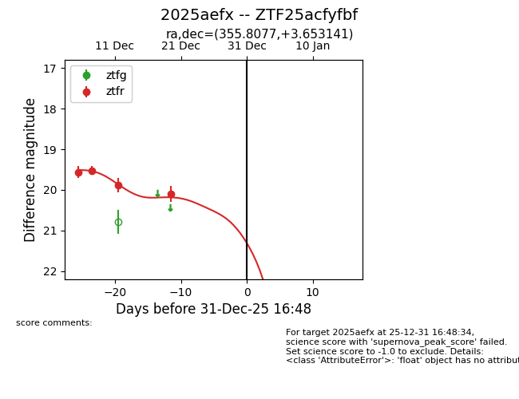
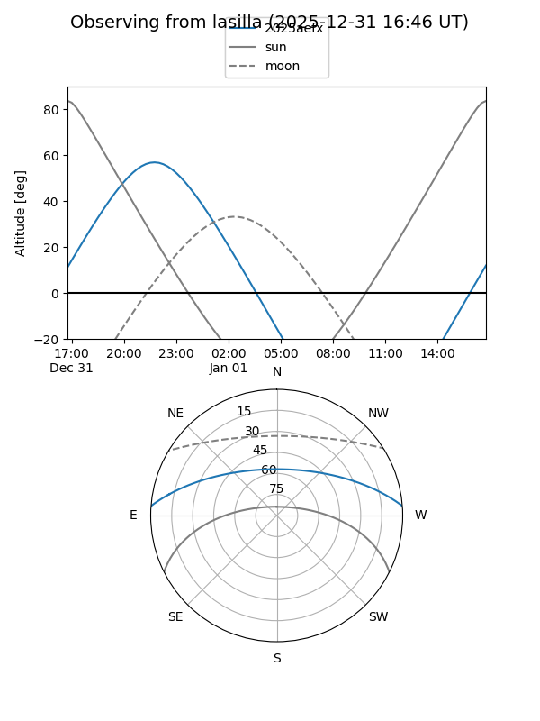
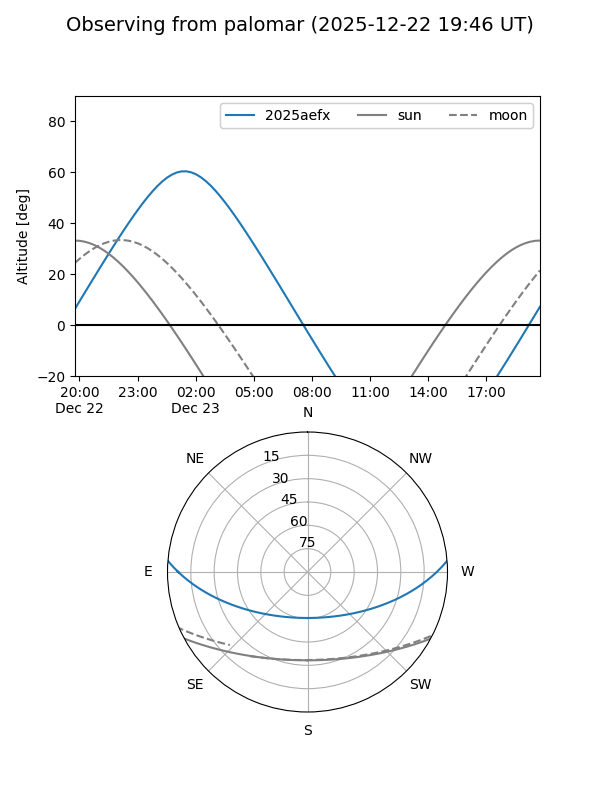
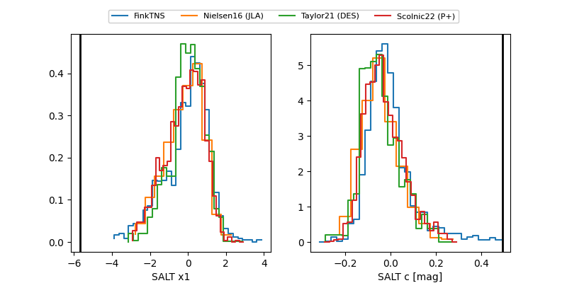

2025aefx
Target 2025aefx at 2025-12-20 03:49
Aliases and brokers:
FINK: fink-portal.org/ZTF25acfyfbf
Lasair: lasair-ztf.lsst.ac.uk/objects/ZTF25acfyfbf
ALeRCE: alerce.online/object/ZTF25acfyfbf
TNS: wis-tns.org/object/2025aefx
YSE: ziggy.ucolick.org/yse/transient_detail/2025aefx
alt names
ZTF25acfyfbf (ztf,fink_ztf)
2025aefx (tns,yse)
Coordinates:
equatorial (ra, dec) = 355.8077,+3.65314
equatorial (HMS+DMS) = 23:43:13.84,+03:39:11.31
galactic (l, b) = (92.1755,-55.09298)
Flags:
Photometry:
last ztfr=20.10
4 ztfr detections
Lightcurve

Visibility


Additional plots
